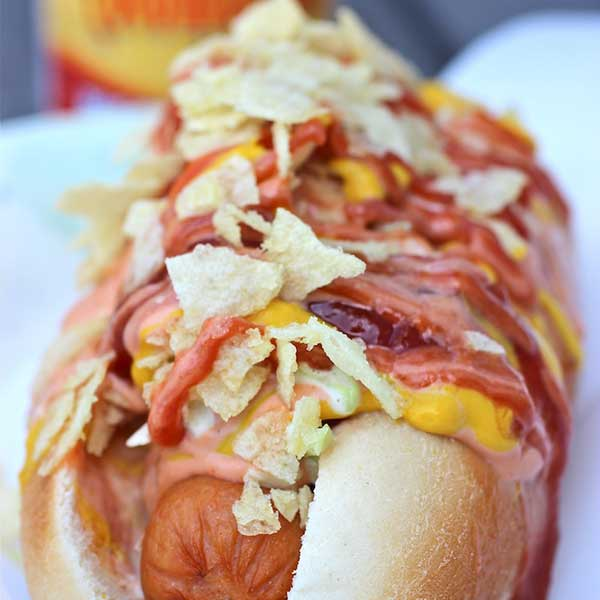

PERRO CALIENTE COLOMBIANO
Perro Caliente Colombiano(Hot Dog Colombian Style) In Colombia we don’t grill the hotdogs or salchichas, we boil them and the toppings include coleslaw, pineapple sauce, ketchup, mayonnaise, mustard and potato chips.

INGREDIENTS
- Pineapple Sauce (About 1 Cup)
- 2 cups fresh pineapple, peeled and cut into chunks
- 1/3 cup water
- 1 ¼ teaspoon cornstarch
- Juice of ½ a lime
- 6 hot dogs buns
- 6 pork and beef hot dogs or veggie dogs
- 1 cup pineapple sauce
- 1 cup cole slaw
- 1 small bag potato chips, crushed into fine pieces
- Mayonnaise
- Ketchup
- Mustard
DIRECTIONS
- Put the pineapple and water in a blender and blend until smooth.
- Press the pineapple mixture through a sieve into a small saucepan. Discard the pineapple on the sieve.
- Place the saucepan with the pineapple mixture over medium-low heat and add the lime juice and sugar. Cook, stirring for about 15 minutes.
- In a small bowl blend the cornstarch with 1 tablespoon of water and then stir the mixture into the pineapple sauce.
- Bring slowly to a boil, stirring until the sauce thickens. Simmer gently for 4 minutes while stirring.
- Let it cool and transfer to a serving bowl.
- In a medium pot bring water to a boil. Add the hot dogs to the boiling water and cover. Cook about 7 minutes.
- Remove and drain on paper towels
- Place the hot dogs in the buns and top with pineapple sauce, coleslaw, mayonnaise, mustard and ketchup, topped with crushed potato chips. Serve and enjoy!